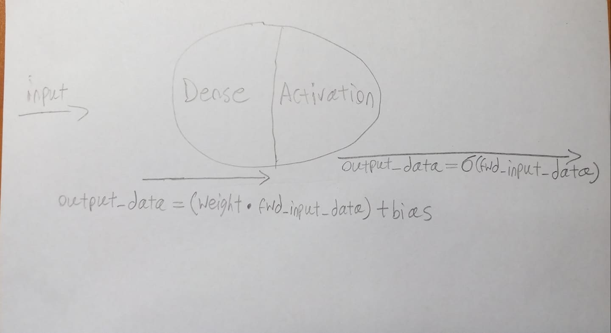
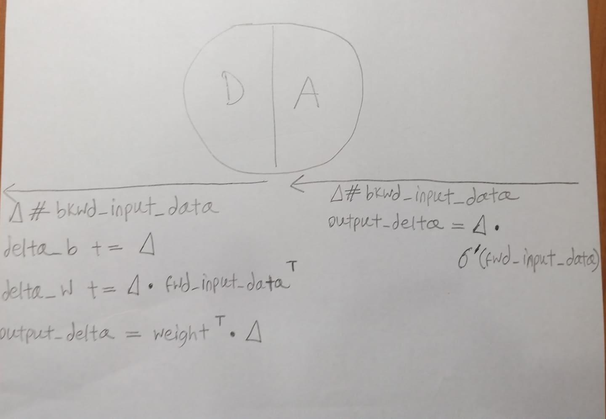
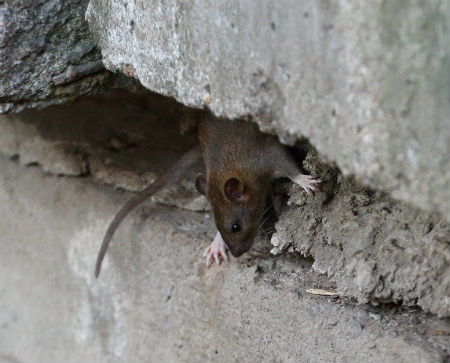

We Love to Hear You

Dense's Forward Pass
def forward(self):
data = self.get_forward_input()
self.output_data = np.dot(self.weight, data) + self.bias # <1>
Activation's Forward Pass
def forward(self):
data = self.get_forward_input()
self.output_data = sigmoid(data) # <2>


Dense's Backward Pass
def backward(self):
data = self.get_forward_input()
delta = self.get_backward_input() # <1>
self.delta_b += delta # <2>
self.delta_w += np.dot(delta, data.transpose()) # <3>
self.output_delta = np.dot(self.weight.transpose(), delta) # <4>
Activation's Backward Pass
def backward(self):
delta = self.get_backward_input()
data = self.get_forward_input()
self.output_delta = delta * sigmoid_prime(data) # <3>

